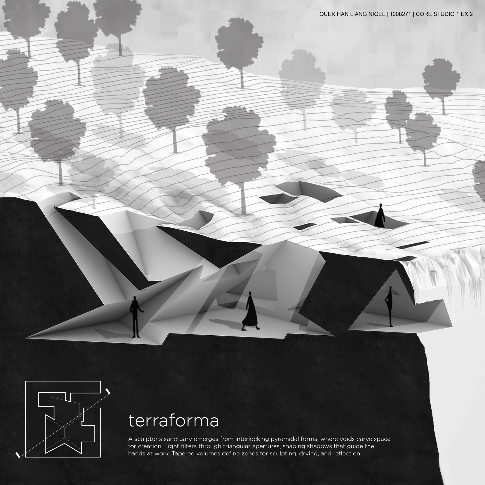
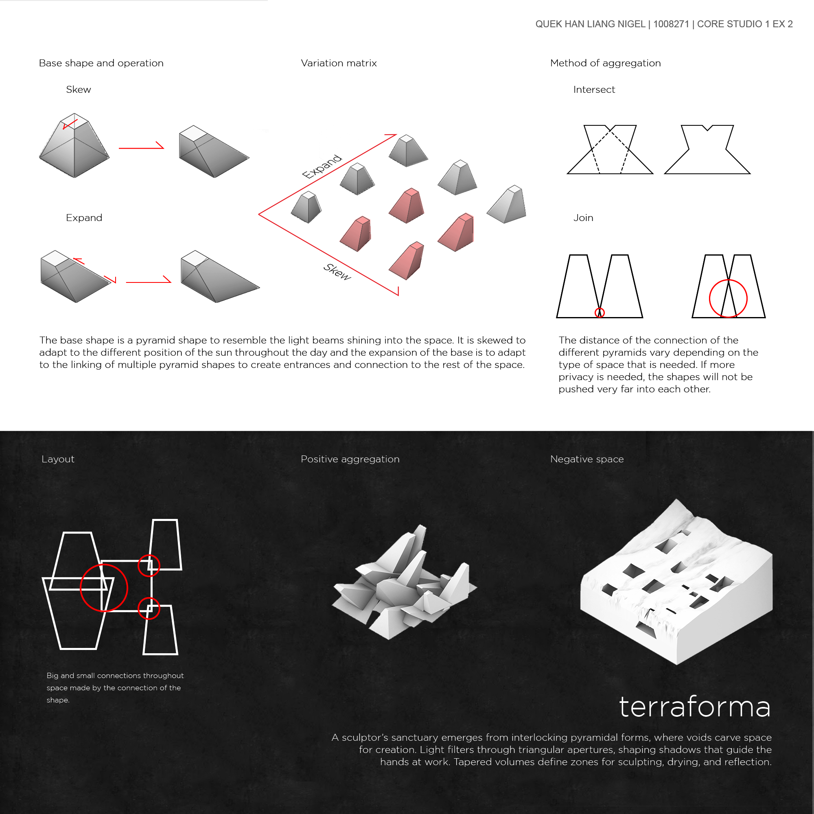
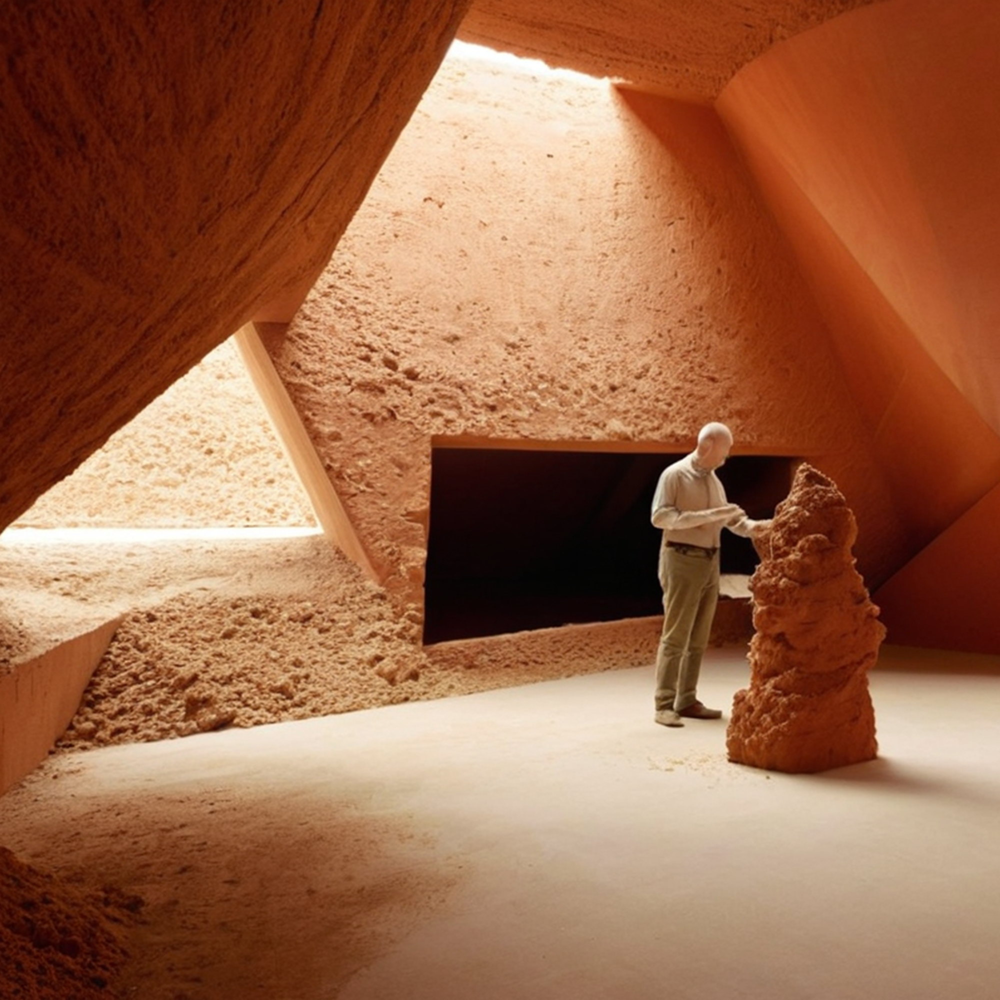

TerraForma
A sculptor's sanctuary emerges from interlocking pyramidal forms, where voids carve space for creation. Light filters through triangular apertures, shaping shadows that guide the hands at work. Tapered volumes define zones for sculpting, drying, and reflection.
The base shape is a pyramid, skewed to adapt to the different positions of the sun throughout the day. The expansion of the base links multiple pyramid shapes to create entrances and connections to the rest of the space. The distance of the connection between different pyramids varies depending on the type of space needed — if more privacy is required, the shapes are not pushed very far into each other.

Section perspective with landscape context

Design process — base shape, variation matrix, and method of aggregation

Interior atmosphere — sculptor's workspace